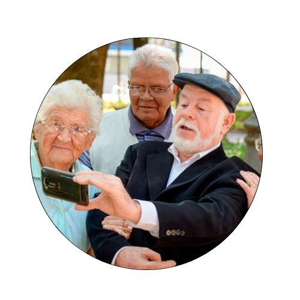
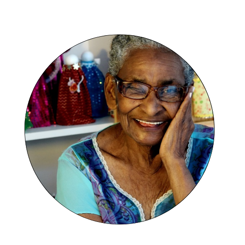
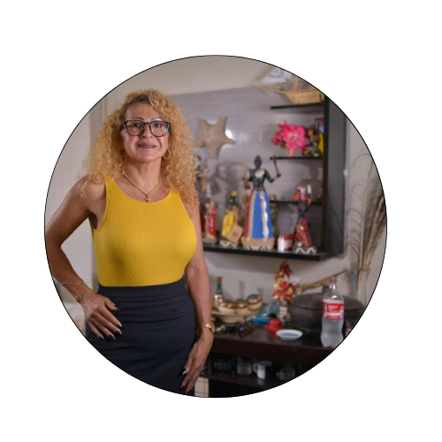

AcolhaME
Pensando em como o capitalismo é excludente com os idosos que ao perderam a sua força de trabalho maioria
das
vezes são tratados como inservíveis e improdutivos.
Sabendo também do problema causado pelo enfraquecimento dos laços familiares, onde o
desamparo familiar cresce ,mais rápido que a expectativa de vida.
E ao mesmo tempo, falta um Estado que compense essa deficiência com políticas públicas que protejam os
desamparados.
Entendendo que o pais carece de um projeto para reforçar os cuidados prolongados e a assistência a velhice.
Na perspectiva de que todas as minorias se não forem eliminadas pelo sistema, envelhecerão, decidir
desenvolver uma página voltada a esse público ao qual denomino “esquecidos”.
Tendo em vista que a solidão é um grande problema enfrentado pelos idosos, a página tem como objetivo
conectar
voluntários que desejam disponibilizar uma parte do seu tempo para interagir com idosas(os) que se sentem
sozinhas(os) e estão em situação de abandono.
Aqui está disponivel um formulario onde a(o) voluntária(o) e a(o) idosa(o)
poderão se cadastrar
colocando informações pessoais e serão conectados pelas suas
afinidades.
Informamos que o projeto AcolheMe não visa doação de valores e nem propõe encontro presenciais, para
que a segurança e o bem estar dos idosos se mantenham preservados.

O ABANDONO DOS IDOSOS NO BRASIL!
"Com a ilusão de ser eternamente jovem, País sofre com o aumento da expectativa de vida da população.
Falta de planejamento gera impasses de difícil solução, como o crescimento do número de pessoas em
asilos e a falta de uma poupança para garantir uma boa velhice."
Por GIORGIA CAVICCHIOLI, VICENTE VILARDAGA, Revista ISTO É!
Clique
aqui!

ELETRÔNICOS E TECNOLOGIA AJUDAM A TERCEIRA IDADE
"Como a tecnologia pode ajudar idosos a envelhecerem?
O uso da Internet pode ajudar a empoderar e trazer autonomia às pessoas da terceira idade, além de
reduzir sintomas de solidão e depressão."
Por Editorial Avôvó.
Clique aqui!

ESTUDO APONTA DESIGUALDADE NO ENVELHECIMENTO DAS PESSOAS NEGRAS !
"No começo do mês, a Revista Brasileira de Epidemiologia publicou estudo intitulado “Iniquidades raciais
e envelhecimento”, realizado por sete pesquisadores." Cenário desfavorável tem que ser combatido com a
adoção de políticas públicas voltadas para esse grupo
Por Mariza Tavares - G1.
Clique aqui!

UMA VIDA DE LUTA: O ENCELHER DE MULHERES TRANS E TRAVESTIS!!
"Idosas trans têm rotina de solidão, preconceito e específicas demandas na área da saúde; Para
especialista, elas chegam à terceira idade ainda com 40 anos"
Por Alex Bessas - OTEMPO
Clique aqui!